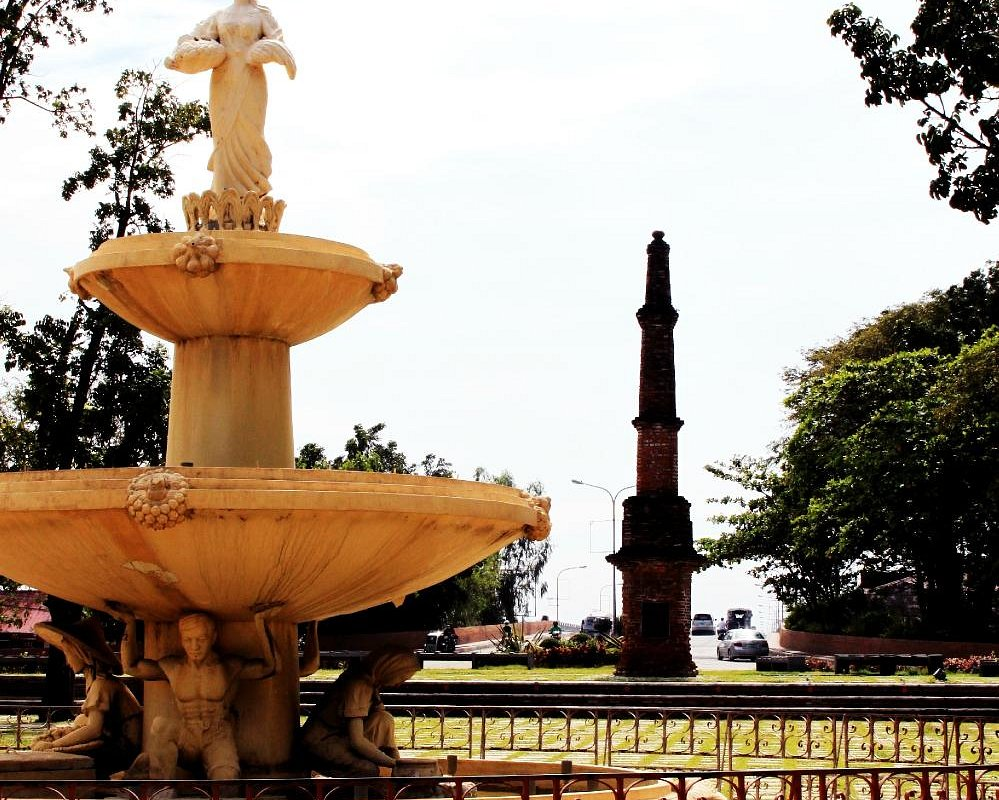
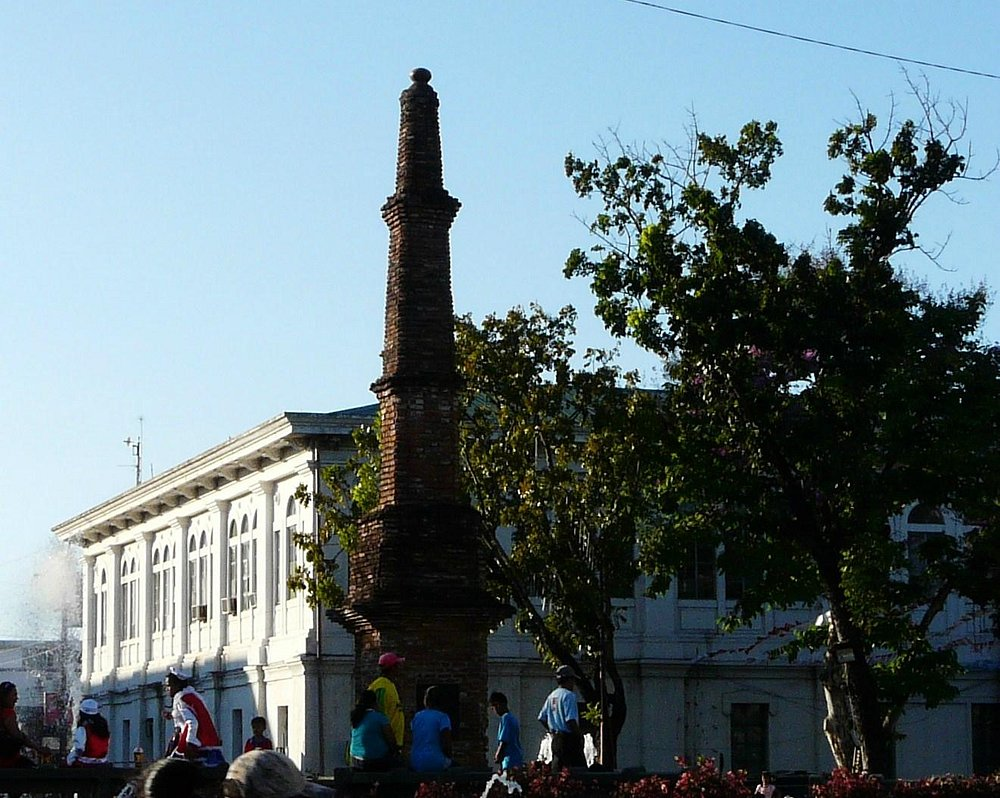
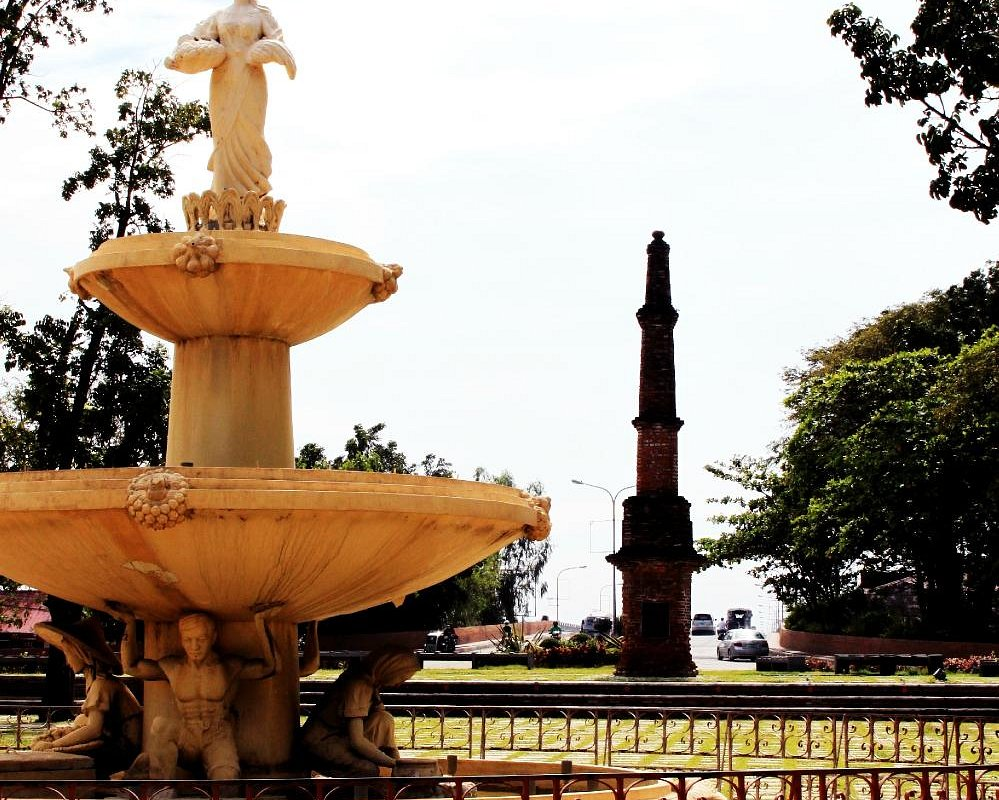
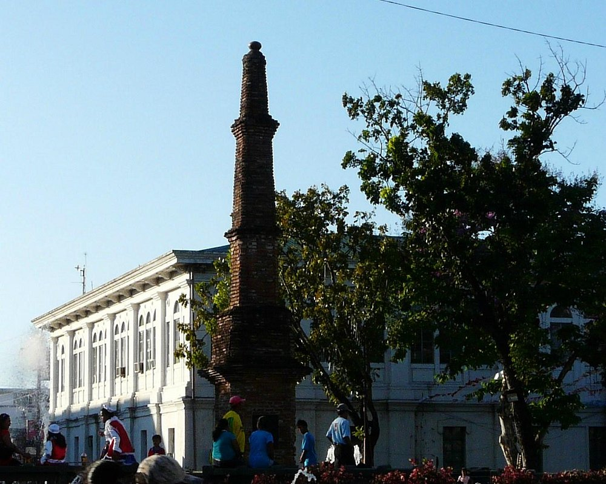
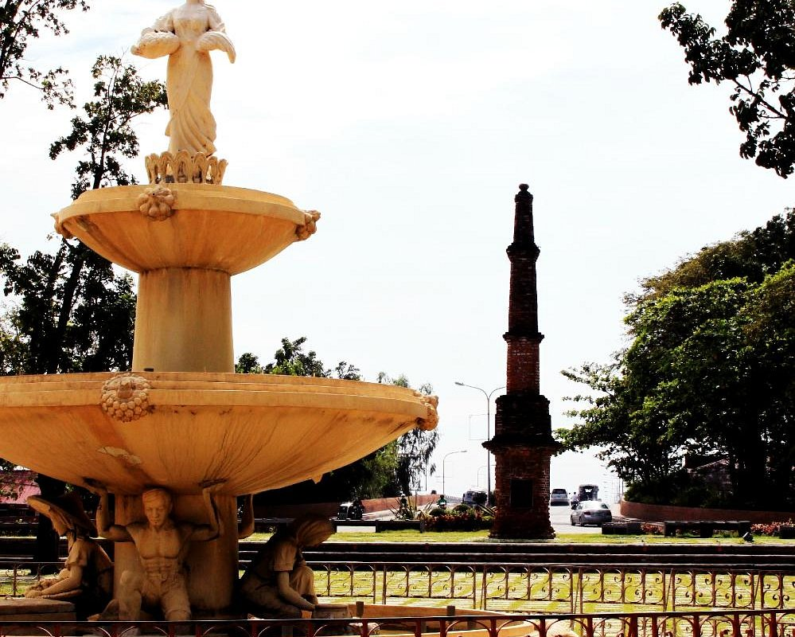
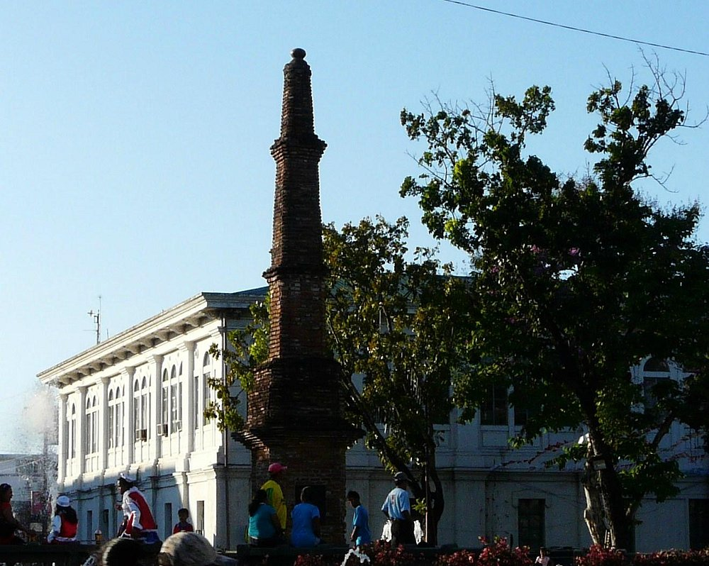

Discover the wonders of the Sunshine City


Tobacco Monopoly Monument
The Abolition of Tobacco Monopoly Monument, along A. Bonifacio St., at the foot of Marcos Bridge, is an obelisk of clay and brick built in 1882 by alcalde mayor (provincial governor) Don Jose Moreno Lacalle as a gesture of thanksgiving to King Alfonso XII of Spain for abolishing the hated tobacco monopoly.
According to historical records, the Laoag area in 1788 was one of the centers of opposition to the imposition of tobacco monopoly. It is reported that “about a thousand persons” rose up in arms as a protest, and major hostilities were barely averted through the intervention of a trusted bishop.
The Tobacco Monopoly was terminated by the Colonial Government in 1882. The monopoly brought about immeasurable benefits to the country for many decades, more if not because of man’s greed of gold.
The tobacco farmers and workers were constantly apprehensive of the agents because they had the freedom to ransack their homes and belongings in search for any hidden leaves. The farmers were strictly prohibited to sell, keep or smoke from their produce and if they were found guilty of any offense they were severely punished.
The missionaries who were always outspoken and aggressive in protecting the natives against the abuses of employees and officials of the government represented the farmers to the King of Spain reporting the injustices done by the monopoly agents.
After a careful and unbiased consideration of the persistent reports regarding the maltreatment of the tobacco producers, His Majesty King Alfonso XII of Spain decreed on June 25, 1881 the abolition of the monopoly despite the fact that the said termination of the government control of the tobacco industry meant a big loss of revenue to the government. The lifting of the monopoly took effect in 1882 exactly one hundred years after its inception.